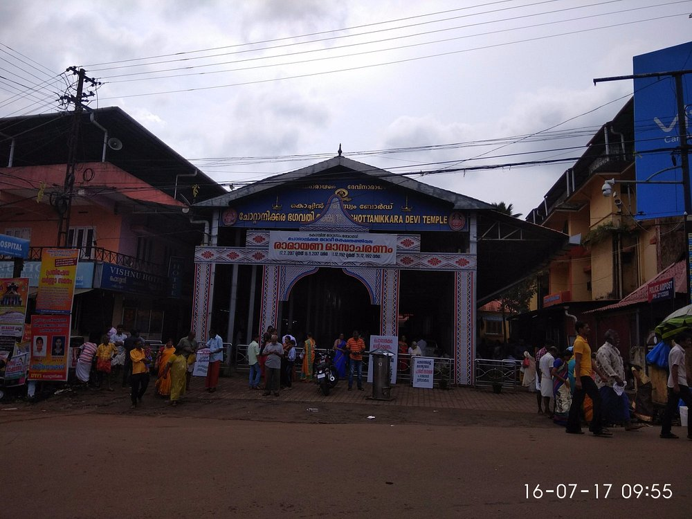

Place of Worship. you chant mantras and make rounds around the shrines especially in the morning times, Later adorn the Kumkum and Sandal on your forehead as Prasad from the GOD

It is a divine place in the city crowd... Especially the old Church... The new church is a architectural marvel but I couldn't feel the divine feel as the old one... Fridays is the important day for prayer here... Just a walkable distance from Lulu mall...

Prefer Puthuvype Beach to Fort Kochi beach because it is easily accessible from high court junction. The drive from there to the beach takes about 15 minutes for crossing the Goshree bridges and on the way we can see Bolghatty Island, Vypin fishing harbor, Vallarpadom Container Terminal etc.